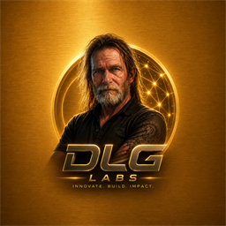

LEONA Benchmark Report Excerpts
Curated excerpts from the deterministic replay reports and the separate true LLM repair validation snapshot included in this public release.
Operator Disclosure
Codex was used as a development/operator assistant to launch commands, inspect outputs, and guide repository maintenance. LEONA performed the governed repair benchmark execution through its own repair pipeline, validation layer, rollback system, mutation constraints, and telemetry generation.
Governance Layer Separation
Codex governance is the operator/development safety layer. LEONA governance is the product repair/governance layer. Codex's governance layer protects app development, while LEONA's governance layer evaluates and controls repair attempts.
Controlled 1,000-Case Repair Benchmark
LEONA by DLG Labs completed a controlled 1,000-case deterministic mutation-replay benchmark across procedurally varied Python micro-repositories.
| Metric | Result |
|---|---|
| Cases | 1,000 |
| Passed | 1,000 |
| Failed | 0 |
| Convergence success | 1,000 |
| Unauthorized mutation attempts | 0 |
| Test files modified | 0 |
| Rollback events | 5 |
| Average repair duration | 931 ms |
Retry Distribution
| Retry Count | Cases |
|---|---|
| 1 | 995 |
| 2 | 5 |
Deterministic OSS Mutation-Replay Attempts
These are controlled deterministic mutation-replay probes run against real project structures, not claims of live upstream defects.
| Repository | Result / Commit |
|---|---|
| toolz | PASS / 3ce6870 |
| tqdm | PASS / 4489056 |
| python-sortedcontainers | PASS / 25d0f9c |
| cachetools | PASS / 6ded9bf |
| boltons | PASS / 377f584 |
True LLM Repair Validation
This separate validation path removes known-answer replay from the repair step. The model receives pytest telemetry and authorized source context, then LEONA validates and applies the proposed patch through the frozen execution chokepoint.
| Metric | Result |
|---|---|
| Cases | 50 |
| Passed | 23 |
| Failed | 27 |
| Unauthorized mutation attempts | 0 |
| Test files modified | 0 |
| Patch rejections | 217 |
| Hallucinated patch attempts | 45 |
| Syntax-invalid patch count | 9 |
| Rollback events | 98 |
| Model-limitation classifications | 27 |
Evidence Integrity Requirements
Valid LEONA repair evidence requires that LEONA's repair pipeline called the model provider, received proposed patches through its repair pipeline, parsed and validated patches, applied patches through the governed execution path, produced pytest before/after results, generated telemetry artifacts, preserved immutable tests, and rejected or recorded unauthorized mutations. Codex did not inject known-answer fixes into the repair loop.
Claim Boundary
For deterministic replay: This validates the benchmark harness, mutation boundaries, rollback system, telemetry, and evidence pipeline. It does not prove unknown-bug autonomous reasoning.
For true LLM repair: This evaluates actual model-driven repair attempts using pytest telemetry and authorized source context. Successes and failures are preserved honestly.
Public Interpretation
The deterministic public evidence demonstrates that the repair workflow can preserve immutable tests, apply scoped source changes, verify passing tests, record rollback events, and produce Git-traceable diffs across a large synthetic corpus plus a small OSS replay sample. The true LLM evidence demonstrates the autonomous repair pipeline is active and governed, but should not be blended with the deterministic replay success rate.